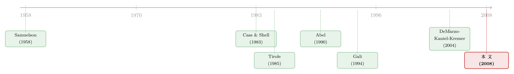

怕的不是亏钱，是「跟大家一起穷」——理性人如何亲手吹起一个泡沫
本文读的是 DeMarzo, Kaniel & Kremer (2008, Review of Financial Studies)：在一个完全理性、信息对称、有限期限的世代交叠经济里，作者证明只要存在「未来稀缺的投资机会」，年轻人就会内生地产生相对财富关切 (relative wealth concerns)，从而抱团涌入风险资产，把价格推到基本面之上、风险溢价压成负数——一个谁都知道会破、却谁都不敢反手做空的「理性泡沫」。
1 一个让人不舒服的问题
先说一个几乎所有金融学课程都会告诉你的「常识」：市场上若出现错误定价，理性的套利者会买入被低估的、卖出被高估的，「低买高卖」这只看不见的手会把价格拉回基本面。于是泡沫不该长期存在；就算存在，也只能归咎于「非理性」——投资者犯傻了、被情绪冲昏了头、或者掌握的信息不全。
可现实里我们一次次看到，聪明人明明知道价格离谱，却还是跟着买。1999 年的科网、各种各样的「击鼓传花」，事后复盘时大家都说「我当时就觉得这玩意儿要破」。问题是：如果你早就觉得它要破，为什么不反手做空，赚那笔「价格回归」的钱？
标准答案是「套利有限」——做空有约束、有融资成本、有噪声交易者风险。但 DeMarzo, Kaniel 和 Kremer 这篇 2008 年发表在 RFS 上的论文，给了一个更狠、也更干净的回答：
即便没有任何信息不对称，不存在卖空限制，所有人完全理性、用倒推法 (backward induction) 解自己的组合问题，而且经济的期限是有限的——泡沫照样会在均衡中出现。
换句话说，他们把教科书里所有「方便的借口」一个个拿掉，泡沫却拿不掉。那剩下的那个东西是什么？答案是：相对财富关切。而且关键在于——它不是被作者硬塞进效用函数的偏好假设，而是从一个纯粹的市场机制里自己长出来的。
2 「相对财富」不是假设出来的
经济学家很早就相信人会攀比。凡勃伦 (Veblen, 1899) 在《有闲阶级论》里说，社会越富，维持你社会地位所需的消费就越多；Frank (1985) 强调相对财富决定社会身份。到了资产定价里，Abel (1990) 那个著名的「追赶琼斯一家 (catching up with the Joneses)」效用，干脆把别人的消费水平直接写进了你的效用函数。
这类做法都有一个共同的「软肋」：你外生地假定别人的财富会进入我的效用——可一旦允许自己选函数形式，自由度太大，几乎想要什么结论都能凑出来。
这篇论文的第一个漂亮之处，就是它不这么干。作者说：我让所有人只关心自己的消费，效用函数就是最标准的常相对风险厌恶 (constant relative risk aversion, CRRA)。相对财富关切要是真有用，它得自己冒出来。
它怎么冒出来的？靠一个金钱性外部性 (pecuniary externality)。逻辑朴素得让人拍腿：
如果存在某种稀缺的好东西，它的价格会随着投资者整体的财富水涨船高，那么你能不能买到这个好东西，就不只取决于你自己有多少钱，而取决于你相对于别人有多少钱。
在这篇论文里，这个「稀缺的好东西」就是未来的投资机会。当你这一代人整体很有钱时，大家一起去抢未来那点有限的投资标的，会把均衡收益率压低、把养老的成本抬高。于是同样一笔钱，在「同辈都很富」的世界里就不经花。这就逼出了一个再自然不过的动机：我得保证自己不要在「同辈很富」的那个状态里掉队。
接着，一个自然的问题是：怎么才能不掉队？答案是——模仿。我让自己的财富和同辈的财富正相关，他们富我也富，他们穷我也穷，这样我就永远不会陷入「别人都富、就我穷」的最难受境地。于是抱团 (herding) 出现了。而当一代年轻人一起抱团涌入某个资产时，这个集体行为就有了总量层面的价格影响。
这正是「相对财富关切」与单纯「追赶琼斯」的分水岭。论文后面（第 4 节）特别指出：单有「keeping up with the Joneses」的偏好性质还不够支撑均衡里的抱团，需要一个更苛刻的必要条件。换句话说，仅仅「在乎别人」是不够的，必须是这种在乎能反过来撬动价格。
（关于「投资者结构如何把价格推离基本面、而非个体非理性」这条思路，本博客也读过另一篇视角不同但精神相通的文章，可参见《你卖出时，谁还在场？——把「需求分歧」写进资产定价》。）
3 模型：三个日期、三代人
要把上面这套直觉做实，作者搭了一个极简的有限世代交叠 (overlapping generations, OLG) 模型。之所以选有限期限，是有意为之——无限期 OLG 模型里的泡沫是另一码事（靠的是「法币 (fiat money)」式的机制，如 Tirole (1985)），作者要的恰恰是「在一个干净、标准、有限的经济里也能造出泡沫」。
时间与人物。 三个日期 \(t = 0, 1, 2\)，三类人：
- 中年人 (Middle-aged, M)：活在日期 0 和 1，只在日期 1 消费；
- 年轻人 (Young, Y)：活在日期 0、1、2；
- 未出生者 (Unborn, U)：活在日期 1 和 2。
禀赋结构如下表（「—」表示该类人此期不存在，「0」表示存在但无禀赋；日期 0 的消费假定已发生）：
| 日期 | 0 | 1 | 2 |
|---|---|---|---|
| 中年人 M | 0 | \(e_{M1}\) | — |
| 年轻人 Y | 0 | \(e_{Y1}\) | 0 |
| 未出生者 U | — | 0 | \(e_{U2}\) |
偏好。 所有人最大化可分的 CRRA 效用，且不贴现。年轻人与未出生者最大化 \((1-\gamma)^{-1}\mathbb{E}\!\left(c_1^{1-\gamma}+c_2^{1-\gamma}\right)\)，中年人只在日期 1 消费，最大化 \((1-\gamma)^{-1}\mathbb{E}\!\left(c_1^{1-\gamma}\right)\)。
资产。 为引入投机的可能，允许交易两种零净供给的短期证券：一只风险证券，下期若「下雨」（概率 50%）付 2 单位、否则付 0；一只无风险债券，下期确定性地付 1 单位。注意此处禀赋全部无风险——这是故意的，目的是让风险证券的任何收益都与总量基本面无关，从而把「泡沫」从「风险补偿」里彻底剥离出来。
在这样一个无总量风险的经济里，标准模型给出的唯一均衡价格是：风险证券不被交易，且其价格等于无风险债券——作者称之为「基本面」价格。直觉上你会以为这就是唯一均衡。论文的全部张力，就在于证明它不是。
3.1 倒着解：从日期 1 的利率开始
模型要用倒推法。先看日期 1 到 2 之间。中年人此时已到生命尽头，把财富全消费掉；于是这一段就是年轻人与未出生者之间一个标准的两期交换经济。标准结论是：这里不会有投机交易，双方只用无风险资产平滑消费。
CRRA 下两期消费成比例，日期 1 的（毛）均衡利率 \(R_1\) 由年轻一代持有的日期 1 消费品总量 \(W_{Y1}\) 与未出生者的日期 2 禀赋 \(e_{U2}\) 共同决定：
$$ R_1 = \left(\frac{e_{U2}}{W_{Y1}}\right)^{\gamma} \tag{1} $$
这条式子是整个机制的发动机。它说：均衡利率随年轻一代的消费增长率递增——年轻人这一代越有钱（\(W_{Y1}\) 越大），他们越要把日期 1 的钱搬到日期 2 去养老，竞争把利率 \(R_1\) 压低。利率低，意味着「为退休存钱」这件事变贵了。
给定 \(R_1\)，一个持有财富 \(w\)（以日期 1 消费单位计）的年轻人的间接效用 (indirect utility) 为：
$$ \frac{1}{1-\gamma}\, w^{1-\gamma}\left(1 + R_1^{(1-\gamma)/\gamma}\right)^{\gamma} \tag{2} $$
它自然地随 \(R_1\) 递增——利率越高，年轻人越容易为退休攒下钱（注意当 \(\gamma > 1\) 时效用为负）。把 (1) 代入 (2)，消掉 \(R_1\)，就得到把「同辈财富」显式写进去的间接效用：
这一步是全文的枢纽。 请盯住这条 \(v(w, W_{Y1})\)：当 \(\gamma > 1\) 时，单个年轻人财富的边际间接效用，随同辈总财富 \(W_{Y1}\) 递增。用博弈论的话讲，年轻人之间存在一种策略互补 (strategic complementarity)：每个年轻人都偏好让自己的财富与同辈财富正相关。
为什么？把 (1) 翻译成人话——同辈越富，未来利率越低，养老越贵，所以「在同辈富的那个世界里我也得富」才划算；反过来，在同辈穷、利率高、养老便宜的世界里我穷一点也无所谓。于是每个人都想让自己的财富与同辈的财富「同涨同跌」。而做到这一点的工具，恰恰是那只与基本面无关的风险证券：大家一起买它，谁的财富都随「下不下雨」一起波动，彼此就绑定了。
3.2 投机均衡：一个不动点
现在回到日期 0。因为日期 0 无消费，令无风险债券为计价物，\(p_0\) 为风险证券相对债券的价格。
作者考察单个年轻人对整个年轻群体行为的最优反应。设年轻群体的组合带有一个「投机偏向 (speculative bias)」\(\sigma\)：他们的财富在下雨时为 \(W_{Y1}=c(1+\sigma)\)、不下雨时为 \(W_{Y1}=c(1-\sigma)\)。\(\sigma=0\) 表示不冒险，\(\sigma>0\) 表示净持有风险证券。给定群体偏向 \(\sigma\)，记单个年轻人的最优偏向为 \(m(\sigma)\)。均衡就是一个不动点 \(m(\sigma)=\sigma\)：每个个体最优地选择了与群体一致的偏向。
怎么求 \(m(\sigma)\)？由市场出清，中年人的消费被年轻人的总交易决定，中年人的边际替代率定出价格比：
$$ \frac{p_0}{2-p_0} = \left(\frac{e_{Y1}+e_{M1}-c(1+\sigma)}{e_{Y1}+e_{M1}-c(1-\sigma)}\right)^{-\gamma} \tag{4} $$
右边是中年人在「雨/不雨」两状态间的边际替代率；左边是这两状态间消费的相对价格（买两只债券、做空一只风险证券，恰好在不下雨时付 2 单位）。再加上年轻人的预算约束：
$$ e_{Y1} = c + c\,\sigma\,(p_0 - 1) \tag{5} $$
(4) 和 (5) 联立解出 \(c\) 与 \(p_0\) 作为群体偏向 \(\sigma\) 的函数；有了 \(p_0\)，再由间接效用 (3) 解出个体最优反应 \(m(\sigma)\)。
3.3 投机均衡何时存在
绕了这么大一圈，结论却异常简洁。命题 1 给出投机均衡（即存在 \(\sigma>0\)、\(p_0>1\) 的不动点 \(m(\sigma)=\sigma\)）的充分条件：
$$ \gamma > 2 + \frac{e_{Y1}}{e_{M1}} + \left(\frac{e_{U2}}{e_{Y1}}\right)^{\gamma-1}\!\left(1 + \frac{e_{Y1}}{e_{M1}}\right) \tag{6} $$
读这条不等式，能读出三层直觉：
- 必须足够风险厌恶。 \(\gamma\) 要够大泡沫才长得出来——这与「泡沫源于冒险偏好」的朴素想象恰好相反。这里恰恰是怕风险的人，因为怕「相对掉队」这种风险，反而抱团去买风险资产。
- 年轻人相对中年人越多（\(e_{Y1}/e_{M1}\) 越大），越难支撑。 因为中年社区越小，年轻交易者的价格冲击越大，越不容易形成稳定的投机。
- 未出生者禀赋 \(e_{U2}\) 越低，越容易满足。 \(e_{U2}\) 小，会让日期 2 消费品的价格（也就是利率）对年轻一代的财富更敏感——发动机 (1) 转得更猛。
作者给了一个代表性数值：所有禀赋都等于 1、\(\gamma=6\)。此时除了基准的非投机均衡 \(m(0)=0\)，还存在另一个投机均衡：群体偏向 \(\sigma = 16.4\%\)，风险证券的相对价格 \(p_0 = 1.67\)——也就是说，一只期望支付与无风险债券完全相同的证券，价格却高出 67%，对应一个负的风险溢价。这正是论文给「泡沫」下的定义的两个条件同时成立：(1) 与总量风险非负相关的资产，价格超过了以无风险利率贴现的现金流期望现值（负风险溢价）；(2) 人们明知 (1) 仍理性地选择持有。
而当作者允许多轮投机交易、把它做成一个动态过程时，更戏剧化的图景出现了：只要偏离一旦形成，它会随时间被不断放大——年轻人越富，他们对价格的影响越大，抱团激励就越强——直到某一期股息「没付出来」，泡沫骤然崩塌。在一个有代表性的例子里，风险证券的价格在持续付息期间一路涨到比无风险年金高 80% 的溢价，而这个溢价在某一期错过股息时瞬间归零。这已经非常接近 Samuelson (1958) 式「法币」的价格形态了——尽管这里没有任何法币。
别忘了这一切发生的前提：有限期限、对称信息、无卖空限制、完全理性。崩塌不是因为「有人先知道了坏消息」，而是因为这个泡沫从一开始就建立在一个与基本面无关的「太阳黑子 (sunspot)」式协调上——只不过作者进一步证明，一旦经济里引入真实的总量风险（风险证券与总量风险正相关），这个均衡就不再是太阳黑子，却仍然表现得像个泡沫：只要人们比对数效用更厌恶风险，就总存在一个年轻人抱团、过度投资、把风险溢价打成负数的均衡。
4 文献脉络
把这篇论文放回它生长的那条藤上，会看得更清楚。
起点是「相对」二字。 凡勃伦 (Veblen, 1899)、Frank (1985) 在社会学和经济学的层面论证了人对相对地位的在意。Abel (1990) 第一个把这件事写进金融——「追赶琼斯一家」，用外生偏好让别人的（滞后）消费进入你的效用；Gali (1994) 沿着这条路分析消费外部性对股权溢价的影响，Bakshi & Chen (1996) 则证明当投资者在乎彼此财富时价格会更波动。本文的偏好更接近 Gali 与 Bakshi-Chen（在乎的是当期而非滞后的人均财富），但关键的分野在于：前人都是外生地写入相对偏好，本文让它内生地从金钱性外部性里涌现。

另一条支流是「相对财富如何内生」。 Cole, Mailath & Postlewaite (1992, 2001) 用「竞争配偶」这种非市场竞争造出相对财富效应；Becker, Murphy & Werning (2005) 用对「身份商品」的偏好让地位抬高消费的边际效用、导致过度冒险。本文与它们神似，但用的是市场上对稀缺投资机会的竞争，而且——这是它们都没做的——把矛头对准了资产价格动态。
第三条支流是「泡沫」本身。 这片文献浩如烟海（Brunnermeier (2001) 有出色综述）。Allen & Gale (2000)、Allen, Morris & Postlewaite (1993) 在有限期限里造出泡沫，但依赖信息不对称加卖空/流动性约束；Tirole (1985) 的无限期 OLG 泡沫则依赖法币。本文一个都不靠。技术上它落在不完全市场 (Hart, 1975; Stiglitz, 1982; Geanakoplos & Polemarchakis, 1986) 与太阳黑子均衡 (Cass & Shell, 1983) 的经典传统里，但它的不完全性来自有限参与（未出生者不能在日期 0 交易），而非缺资产。
最近的一站是实证。 Gomez, Priestley & Zapatero (2006) 构建并检验了一个「投资者在乎本国当期平均消费」的国际资产定价模型，第一个用跨国数据经验地证明这类偏好会导致本国风险因子的负风险溢价——这与本文识别出的泡沫式扭曲同源。本文则进一步说明，这些效应如何产生泡沫式的价格动态。最后，本文是作者自己 DeMarzo, Kaniel & Kremer (2004) 那篇静态、对称、聚焦组合选择的论文的动态升级——这次聚焦的是价格效应，代价是很多地方得靠数值解。
5 评论与延伸（Q&A + 研究方向）
(a) 几个可能的疑问
Q：所有人都理性，这凭什么还叫「泡沫」？
作者自己也意识到这个争议，专门给「泡沫」下了可操作的定义：(1) 一个与总量风险非负相关的资产，价格高于按无风险利率贴现的现金流期望现值（即负风险溢价）；(2) 人们明知这一点仍理性持有。条件 (1) 把泡沫与「单纯的风险承受」区分开，条件 (2) 把它与「因预期错误或信息不全犯的错」区分开。本文的均衡两条都满足——理性，却仍是泡沫。
Q：和 Abel 的「追赶琼斯」到底差在哪？
差在「外生 vs 内生」。Abel 是手工把别人的消费塞进效用函数，函数形式由你挑，自由度太大。本文让所有人只关心自己的消费，相对财富关切是从「未来投资机会稀缺」这个市场机制里算出来的。而且作者证明，单有「追赶琼斯」式偏好不足以支撑均衡抱团，还需要一个更严的必要条件。
Q：为什么是「越怕风险」的人越去买风险资产？这不矛盾吗？
不矛盾，因为他们怕的不是「绝对的亏损」，而是「相对的掉队」。当 \(\gamma>1\)、策略互补成立时，最难受的状态是「同辈都富、就我穷」（那时利率低、养老贵，而我又没钱）。买那只与基本面无关的风险证券，恰好能让自己的财富与同辈同涨同跌，对冲掉这个「相对贫穷」的风险。越厌恶风险，越想买这份「合群保险」。
Q：为什么一定要「未出生者不能在日期 0 交易」这个设定？
这是市场不完全性的唯一来源，也是泡沫存在的命门。如果未出生者能在日期 0 就进场交易，他们会做反向交易、抹平投机均衡——第一福利定理就会生效，无效率的结果不会出现。这种不完全性不是「缺了某种资产」，而是「有人还没出生、没法参与」的有限参与 (limited participation)。
Q：有限期限和无限期 OLG 泡沫是一回事吗？
不是，这正是作者刻意选有限期限的理由。无限期 OLG 里的泡沫（如 Tirole, 1985）靠的是「法币」式机制——一个不付任何股息的东西也能有正价格。本文的资产是付股息的，泡沫机制完全不同；而且作者证明，把期数加多时，有限期均衡会收敛到一个无限期 OLG 的稳态，但这个稳态偏离基准不是法币效应。
Q：负风险溢价听起来很极端，参数现实吗？
在「禀赋都为 1、\(\gamma=6\)」这个代表性例子里，投机均衡给出 \(\sigma=16.4\%\)、\(p_0=1.67\)（即 67% 的溢价）；多轮动态版本能到 80% 溢价。\(\gamma=6\) 在宏观资产定价里属于偏高但常见的取值。命题 1 的不等式 (6) 也诚实地告诉你：要让泡沫出现，\(\gamma\) 必须够大、年轻人不能相对中年人太多、未出生者禀赋要够低——条件是有约束的，并非随处可得。
(b) 几个可能的研究问题与提案
1. 把「相对财富抱团」搬进公司债的赎回压力。
【经济故事】本文的机制是「同辈很富→未来稀缺资源更贵→我得绑定同辈」。债券基金之间存在高度类似的结构：当同类基金都在追逐同一批高收益债时，未来的「可买入标的」与「赎回时的流动性」都变稀缺，单只基金为了不在赎回潮里掉队，会模仿同业持仓。这能内生出一种「抱团持有低流动性债」的脆弱性。
【可行性】中。数据上可用 Morningstar/CRSP MF 的持仓 + TRACE 的债券成交，构造同类基金的持仓重合度与流动性敞口；识别上可借基金间「共同持有」的外生变动（如指数再分类）。难点在于把「相对财富关切」与单纯的「羊群/委托代理」分离开。（可与《基金越难脱手，它手里的债券越「抖」》对照。）
2. 外资持有人作为「另一个社区」，会不会反而打破抱团？
【经济故事】本文强调，泡沫要靠「不同偏好的社区互相交易、切断总量消费与价格的联系」。一国债市里的外资持有人，恰好是一个偏好/约束都不同于本土机构的社区。一个自然的问题是：外资进入究竟是加剧了本土抱团（多了一个追逐稀缺标的的竞争者），还是打破了它（提供了反向交易的对手盘）？
【可行性】中。需要跨国债券持有人层面的数据（如 Morningstar 全球持仓、各国央行的持有人结构统计），识别上可用资本账户开放或指数纳入（如纳入彭博巴克莱全球指数）作为外资进入的外生冲击。本博客读过的《外资真是「蝗虫」吗？》提供了一个可借鉴的长期效应识别框架。
3. 「稀缺的未来投资机会」能不能在数据里被直接度量？ 【经济故事】本文整个机制挂在「未来投资机会稀缺、其价格随同辈财富上升」这一假设上。但它在实证里几乎从未被直接量化。如果能找到一个未来投资机会确实稀缺、且价格对群体财富敏感的市场（如某类配额受限的私募/基础设施投资），就能直接检验「同辈越富→该资源越贵→抱团激励越强」这条因果链。 【可行性】低到中。难点是「未来投资机会的稀缺度」缺乏现成度量；可考虑用受配额约束的市场（如某些 PE 跟投份额、新股配售）做代理。识别需要群体财富的外生变动。
4. 把崩塌的「触发」内生化。 【经济故事】本文里泡沫的崩塌由「某期股息没付」这个外生事件触发。但现实中崩塌往往与协调失败、信息事件相关。一个延伸是：在本文的相对财富框架里加入微小的信息异质或协调摩擦，看泡沫的崩塌时点是否会从「外生」变成「内生且可预测」。 【可行性】中，偏理论。在现有模型上叠加一个全局博弈 (global game) 式的协调层即可，数据需求低，主要是理论贡献。
6 我的判断
这篇论文最让我佩服的，是它的「减法」。泡沫文献长期被一种印象笼罩——你要么承认投资者非理性，要么塞进信息不对称、卖空约束、无限期限或法币。本文把这些借口一个个拿掉，只留下「相对财富关切」一根独苗，而且连这根独苗都不许你外生假设、必须从一个金钱性外部性里长出来。剩下能站住的，就是真正的机制本身。这种「把所有方便的东西删光、看泡沫还活不活」的做法，本身就是一种很高级的论证。
贡献清晰：它给出了一个完全理性、信息对称、有限期限经济里泡沫存在的存在性证明，并刻画了「随时间放大、骤然崩塌」的价格动态；更重要的是，它把「相对财富关切」从一个偏好假设，降格成了一个市场结构的推论。
对识别（这里更应说「对机制可信度」）的担忧有三。其一，整个故事高度依赖那个抽象的「稀缺未来投资机会」，而它在现实经济里对应什么、是否真的「价格随群体财富上升」，论文并未在数据上落地——这是一个纯理论的留白。其二，多轮动态与一般情形大量依赖数值解，命题 1 那样干净的解析条件只在最简设定里成立，参数空间里泡沫到底有多「普遍」，读者只能从代表性例子里感受。其三，模型里只有三代人、两个状态，从这个玩具经济到真实市场的外推，需要相当的信仰。
后续我最想看到的，是把这套内生相对财富机制接到一个可观测、可度量的稀缺资源市场上去做实证——哪怕只是一个受配额约束的细分市场，能让「同辈财富↑→资源价格↑→抱团↑→负溢价」这条链在数据里显形。在我自己关心的公司债与外资持有人方向上，这套「不同社区互相交易、切断总量与价格联系」的框架，尤其值得被认真地搬过去试一试。
参考文献
Abel, A. B. (1990). Asset Prices Under Habit Formation and Catching Up with the Joneses. American Economic Review 80, 38–42.
Allen, F., & Gale, D. (2000). Bubbles and Crises. Economic Journal 110, 236–255.
Allen, F., Morris, S., & Postlewaite, A. (1993). Finite Bubbles with Short Sale Constraints and Asymmetric Information. Journal of Economic Theory 61, 206–229.
Bakshi, G., & Chen, Z. (1996). The Spirit of Capitalism and Stock Market Prices. American Economic Review 86, 133–157.
Becker, G. S., Murphy, K. M., & Werning, I. (2005). The Equilibrium Distribution of Income and the Market for Status. Journal of Political Economy 113, 282–310.
Brunnermeier, M. K. (2001). Asset Pricing Under Asymmetric Information. Oxford: Oxford University Press.
Cass, D., & Shell, K. (1983). Do Sunspots Matter? Journal of Political Economy 91, 193–227.
Cole, H. L., Mailath, G. J., & Postlewaite, A. (1992). Social Norms, Savings Behavior, and Growth. Journal of Political Economy 100, 1092–1125.
DeMarzo, P., Kaniel, R., & Kremer, I. (2004). Diversification as a Public Good: Community Effects in Portfolio Choice. Journal of Finance 59, 1677–1716.
Frank, R. H. (1985). Choosing the Right Pond: Human Behavior and the Quest for Status. Oxford: Oxford University Press.
Gali, J. (1994). Keeping Up with the Joneses: Consumption Externalities, Portfolio Choice, and Asset Prices. Journal of Money, Credit and Banking 26, 1–8.
Gomez, J. P., Priestley, R., & Zapatero, F. (2006). An International CAPM with Consumption Externalities and Non-financial Wealth. Unpublished manuscript.
Hart, O. (1975). On the Optimality of Equilibrium When the Market Structure is Incomplete. Journal of Economic Theory 11, 418–443.
Samuelson, P. A. (1958). An Exact Consumption-Loan Model of Interest with or without the Social Contrivance of Money. Journal of Political Economy 66, 467–482.
Stiglitz, J. E. (1982). The Inefficiency of the Stock Market Equilibrium. Review of Economic Studies 49, 241–261.
Tirole, J. (1985). Asset Bubbles and Overlapping Generations. Econometrica 53(6), 1499–1528.
Veblen, T. B. (1899). The Theory of the Leisure Class: An Economic Study of Institutions. New York: Penguin.